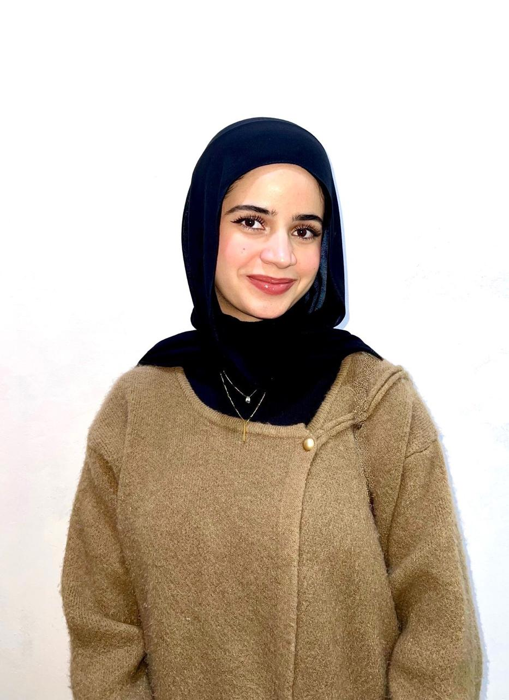

About Me

Hello! My name is Tala Amjad Hajjat and I am a fourth-year Computer Information Systems student. My studies focus on understanding how technology can be used to manage information and support organizational decision making. I am interested in information systems, databases, business applications, and improving digital processes using technology.
University Email: tahajjat22@cit.just.edu.jo
My Key Soft Skills
- Teamwork
- Communication
- Problem Solving
- Time Management
- Adaptability
Favorite Programming Languages, Tools, and Technologies
| Name | Type | Official Website |
|---|---|---|
| Python | Programming Language | python.org |
| MySQL | Database System | mysql.com |
| Power BI | Data Visualization Tool | powerbi.microsoft.com |
| Microsoft Excel | Data Analysis Tool | microsoft.com |
Where Do I See Myself in 4 Years?
In four years, I see myself working in the field of information systems where I can use technology to help organizations manage data and improve their operations. I hope to gain practical experience in data analysis, system management, and business technology solutions. I would also like to continue developing my technical and analytical skills while working in a professional environment that encourages innovation and learning.
Photo Paths
Relative Path: tala-photo.png
Absolute Path on local machine: This will depend on the location of the project folder on your computer.